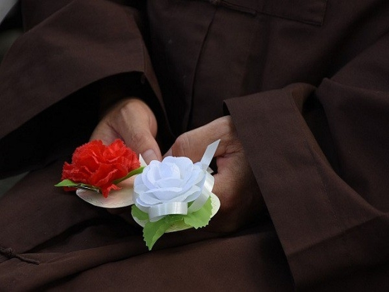
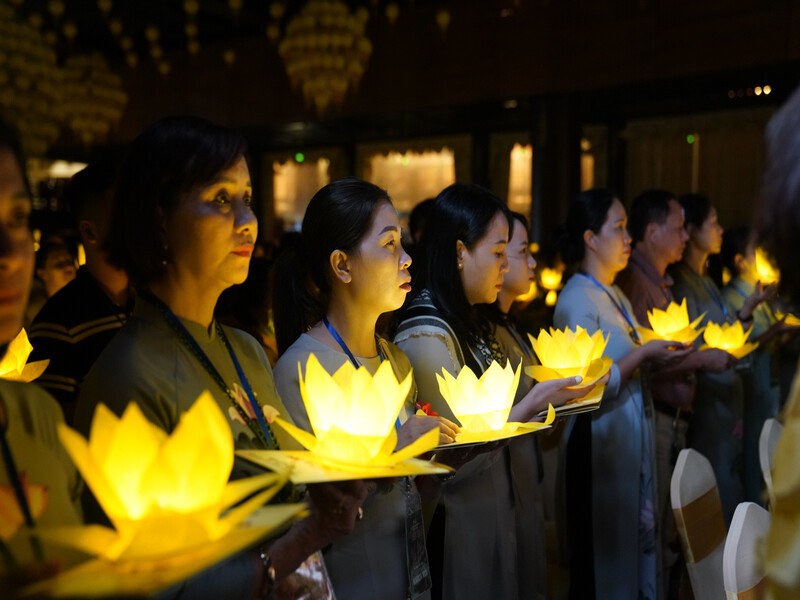

Lễ vu lan là gì? Lễ vu lan nên tặng gì cho bố mẹ báo hiếu?
14/04/2023 THỜI TRANG, THỜI TRANG NỮ

Lễ vu lan là một trong những ngày lễ lớn, mang ý nghĩa sâu sắc của dân tộc. Vậy lễ vu lan có nguồn gốc từ đâu, người Việt Nam tổ chức lễ vu lan như thế nào và ý tưởng mua quà nào phù hợp? Hãy cùng Shopee Blog khám phá thông qua bài viết dưới đây!
Lễ vu lan là gì? Lễ vu lan 2023 vào ngày nào?
Lễ vu lan là gì?
Lễ vu lan là một trong những ngày lễ lớn của năm, nhằm mục đích tưởng nhớ công sinh thành, dưỡng dục của cha mẹ, ông bà và tổ tiên. Đây là ngày lễ thể hiện đậm nét truyền thống “Uống nước nhớ nguồn” của dân tộc ta. Bên cạnh đó, khi tìm hiểu về lễ vu lan là gì, ta còn biết được rằng ngày lễ vu lan hay còn được gọi là Đại thừa Bắc tông – ngày lễ chính của Phật giáo và phong tục Trung Quốc.
Ngày lễ báo hiếu cha mẹ là ngày nào?
Vâỵ lễ vu lan là ngày nào? Xét theo truyền thống, lễ vu lan báo hiếu sẽ được diễn ra vào rằm tháng 7 âm lịch hằng năm. Như vậy, lễ vu lan 2023 sẽ rơi vào thứ Tư, ngày 30 tháng 08 năm 2023.
Lễ vu lan tổ chức vào rằm tháng 7 hằng năm
Nguồn gốc và ý nghĩa lễ vu lan
Nguồn gốc lễ vu lan
Lễ vu lan báo hiếu có nguồn gốc xuất phát từ sự tích trong kinh Vu Lan Bồn của Phật giáo. Câu chuyện kể rằng, khi Bồ Tát Mục Kiền Liên tu thành chánh quả, đã sử dụng tuệ nhãn để báo hiếu cha mẹ. Khi ấy, người biết rằng mẹ đang ở trong tay quỷ dữ.
Tôn giả Mục Kiền Liên đã quay về hỏi Đức Phật cách để cứu mẹ. Ông đã phải sắm sửa cúng vào ngày 15/7 m lịch. Sau khi giải thoát được mẹ của Tôn giả Mục Kiền Liên, Đức Phật đã căn dặn rằng: Chúng sanh ai muốn báo hiếu cho cha mẹ cũng theo cách này mà làm”. Ngày vu lan cũng chính vì thế mà ra đời.
Ngày lễ báo hiếu cha mẹ là ngày nào?
Vâỵ lễ vu lan là ngày nào? Xét theo truyền thống, lễ vu lan báo hiếu sẽ được diễn ra vào rằm tháng 7 âm lịch hằng năm. Như vậy, lễ vu lan 2023 sẽ rơi vào thứ Tư, ngày 30 tháng 08 năm 2023.

Nguồn gốc ngày vu lan báo hiếu xuất phát từ sự tích Bồ Tát Mục Kiền Liên và mẹ
Ý nghĩa vu lan
Ngày vu lan là dịp con cháu bày tỏ sự kính trọng, lòng biết ơn sâu sắc đến công dưỡng dục, hy sinh của cha mẹ. Bên cạnh đó, ngày vu lan cũng mang trong mình sứ mệnh đầy thiêng liêng là gìn giữ truyền thống “Ăn quả nhớ kẻ trồng cây” của người dân Việt Nam. Lễ vu lan báo hiếu như một lời nhắc nhớ của ông cha ta phải luôn đền ơn đáp nghĩa đấng sinh thành, yêu thương cội nguồn, quê hương.
Vì sao phải cài hoa hồng lên áo trong ngày lễ vu lan?
Khi dâng lễ ngày vu lan, nhà chùa thường cài lên áo bạn những bông hồng với các màu sắc khác nhau, tượng trưng cho những tầng ý nghĩa riêng biệt. Đầu tiên, đối với những ai còn cha mẹ, họ sẽ được trao bông hồng đỏ. Đây là biểu tượng thể hiện sự may mắn khi cha mẹ vẫn còn hiện diện trên đời, đồng thời nhắc nhở con cái phải ngoan ngoãn dưới bầu trời yêu thương của cha mẹ.

Cài bông hồng lên áo là phong tục mùa lễ vu lan
Những ai đã mất một trong hai người cha hoặc mẹ thì sẽ được cài bông hồng màu nhạt. Còn ai đã mất đi cả hai đấng sinh thành thì được cài bông hồng trắng. Đây chính là tông màu tượng trưng cho thuần khiết, cho những ký ức và hình bóng phai mờ của cha mẹ. Hoa hồng trắng mang ý nghĩa động viên con người hãy luôn giữ tâm thanh tịnh, an nhiên, sống mạnh mẽ dù không có cha mẹ kề bên.
Lời chúc lễ vu lan ý nghĩa cho bố mẹ
Đối với dịp lễ vu lan báo hiếu, những lời chúc yêu thương đến từ những người con gửi gắm đến bố mẹ là phần không thể thiếu. Hãy tham khảo những gợi ý lời chúc thu hút nhất ngay dưới đây:
- Đối với con, bố mẹ là người tuyệt vời nhất. Bố mẹ không ngại khó khăn, gian khổ đã nuôi dưỡng, giáo dục con nên người. Công ơn cao cả này con không biết làm sao trả hết. Nhân dịp lễ Vu Lan, con xin gửi tặng bố mẹ món quà và mong những điều tốt đẹp nhất sẽ đến với bố mẹ.
- Mẹ là điểm tựa vững chắc nhất giúp con vượt qua bao khó khăn, thử thách trên đường đời. Những khi con thất bại, mẹ an ủi, động viên và chữa lành để con đứng dậy và đương đầu với thử thách. Con xin cảm ơn mẹ, mẹ yêu. Con chúc mẹ luôn vui tươi, khỏe mạnh để con được bên cạnh mẹ nhiều hơn.
- Con cảm ơn bố mẹ yêu dấu của con. Bố mẹ đã nuôi dạy con khôn lớn, trưởng thành. Bố mẹ là vầng dương soi sáng, dẫn lối cho con. Cả cuộc đời này con sẽ không bao giờ quên được công ơn dưỡng dục, sinh thành của bố mẹ.
- Hôm nay là ngày lễ Vu Lan báo hiếu. Con xin chúc cho bố mẹ luôn được mạnh khỏe, bình an và hạnh phúc. Cảm ơn bố mẹ đã luôn yêu thương và dạy bảo con những điều tốt đẹp.
- Nhân ngày lễ Vu Lan, con kính chúc người đàn ông đáng kính nhất cuộc đời con luôn mạnh khỏe, vui vẻ và hạnh phúc. Con luôn cảm thấy thật tự hào vì được làm con của bố! Cảm ơn bố đã luôn ủng hộ và yêu thương con vô điều kiện.

Hãy dành những lời chúc tốt đẹp cho bố mẹ vào mùa lễ vu lan
Như vậy, Shopee Blog đã gửi gắm đến cho bạn những thông tin xoay quanh ngày lễ vu lan mà bất kỳ người con nào cũng không nên bỏ lỡ. Nếu bạn muốn tìm kiếm, khám phá thêm sự kiện trong năm cùng ý tưởng mua quà thì đừng quên xem thêm các bài viết tại Shopee Blog. Đón đọc ngay!